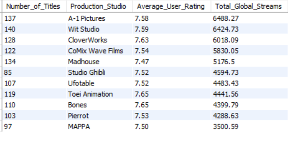

Applied advanced spatial analytics to 2,518 polling units across Kwara State to detect potential voting irregularities in the 2023 Nigerian general election. Used DBSCAN for geographic clustering, Local Moran's I for spatial autocorrelation (flagging 1,402 anomalous units), and Getis-Ord Gi* for hotspot analysis. Combined results with Isolation Forest anomaly detection to produce a composite outlier score, identifying Baruten and Kaiama LGAs — particularly Yashikira Ward — as the highest-risk areas. Integrated historical election data (2015–2023) and demographic data to contextualise findings, revealing APC's declining dominance and Labour Party's emergence as a third force.

Developed a classification model to predict loan approval based on applicant profiles. Performed data preprocessing and evaluated models using confusion matrices and hyperparameter tuning. Achieved an accuracy of 98.01 percent. Delivered insights to guide risk assessment in the lending process.
Tools: Python, GeoPandas, PySAL, Scikit-learn, Folium, Seaborn.

Performed end-to-end SQL data cleaning and exploratory data analysis on a synthetic anime streaming dataset. The project involved duplicate removal, data standardisation, handling missing values, data validation, and business-focused analysis to uncover streaming trends, studio performance, genre popularity, and top-performing titles.
Tech Stack: MySQL, SQL, Data Cleaning, EDA

Built multiple regression models to predict house prices using features like area, number of rooms, and amenities. Applied feature engineering, log transformations, and hyperparameter tuning, achieving the best performance with a Ridge Regression model (R² = 0.679).

Analysed internal displacement patterns across five countries to uncover the key drivers of hazard-induced displacement from floods and droughts. Key findings included Somalia recording the highest displacement levels in 2023 driven primarily by flooding, and a clear inverse relationship between GDP and displacement — suggesting economic strength acts as a buffer against disaster impact. Also identified that disaster frequency and low-elevation geography were significant vulnerability indicators. Visualised findings through scatterplots comparing GDP, elevation, and disaster frequency against displacement counts using Python and Seaborn.